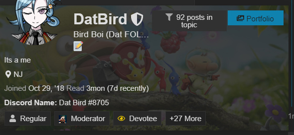

Before that, did Dat state their reads? I want to see them since I had questions about Birb.
That’s a nice recap
I was just generally sus of Arete from D1 (you’ll find a pretty whack interesting read I had on him signaling to Alice) then NKA told me Aroot scum
Then critical thinking told me Aroot not scum
uh i said my poe was eli (i havent got to you in my catching up yet), mole, gorta, and derps
cloned townread, also surge cause obvious
alice is 3p
and arete is like so easy for me to get pocketed by so i want to say town but reservations cause god damn do i not want to get recked by scum arete again
weird null pile of PKR Light
if u got questions though fire away
That makes things more interesting.
Do you or do you not believe Arete, as scum, would do the things you originally mentioned in your post?
Vote Count
| Accused | Voters | Number |
|---|---|---|
| Moleland | Arete, Alice,Gorta,Datbird | 4/6 |
| cheese | Derps | 1/6 |
| Derps | Moleland | 1/6 |
| Light | Light | 1/6 |
| PKR | Surge | 1/6 |
| Appel | Cheese | 1/6 |
| [Not Voting] | Appel, PKR, | 2 |
I stand by what I said
Arete is more than capable of signaling for noot to side with scum + bussing wazza + suggesting a plan that dooms mafia
But I don’t think it’s happening here, at least not as much as I think it’s the less powerful voices that are scum here
Why?
I think I saw your post about Mole already.
Why?
SBPC
in game 3 in game days
 in game bout 12 hours
almost all his content is nothing or complaining. Theres nothing to his cloned push other than it would be easy for scum to do.
they are null and ngl i dont really have much on them. Currently on 776 out of the 1900 posts and light and pkr are just kinda there, but unlike derps occasionally talk and contribute but nothing enough to be like oh yeah thats town or scum.
Like
The first 2 votes came from Arete saying Mole TMI’ed them as town and not much good evidence since
And Gorta went on there like ???
If Mole flips town I want to yeet Arete/Gorta/Alice
But otherwise not really
…Sigh. Aaaaaaaa.
Now your response here doesn’t make sense; it just looks like your confbiasing yourself. For you to completely throw away your Arete read because another possibility came to mind, and then backing it up with “well, I think they’re more likely to do it as town” without anything else changing but your conclusion of the NKA is…
Aaaaa. Very aaaaa. I’d say you’re giving me a headache but I’m not giving up that easily.
If you individuals want to CFD to gorta I’d be more than happy
But I think the mole lynch gives us info
I mean
TMIing me town is not the only reason I scumread Mole
I tend to do this a lot
Would you say you do this as town or as scum?
town?
Since doing it as town would mean im wrong and don’t really make logical sense
Doing it as town would mean im lying and would generally make more logical sense
Dat’s response looks actually good. I’m almost at school so I have to go for a bit, but I originally thought Birb’s sudden seriousness and tone in general were a bit weird. I’m gonna read through more of Dat’s posts later.
if u can before eod, say what u like of the post? cause honestly it seemed like a normal response to me
ok my shoulder is killing me from yardwork :joytree:. Imma sleep as this shit killing me. I think the four i mentioned before are fine lynches, imma stay on mole though. Please stay within those 4 or ur all loosers
1 Like
I take it youre not convinced on the gorta lynch then 
Good night~